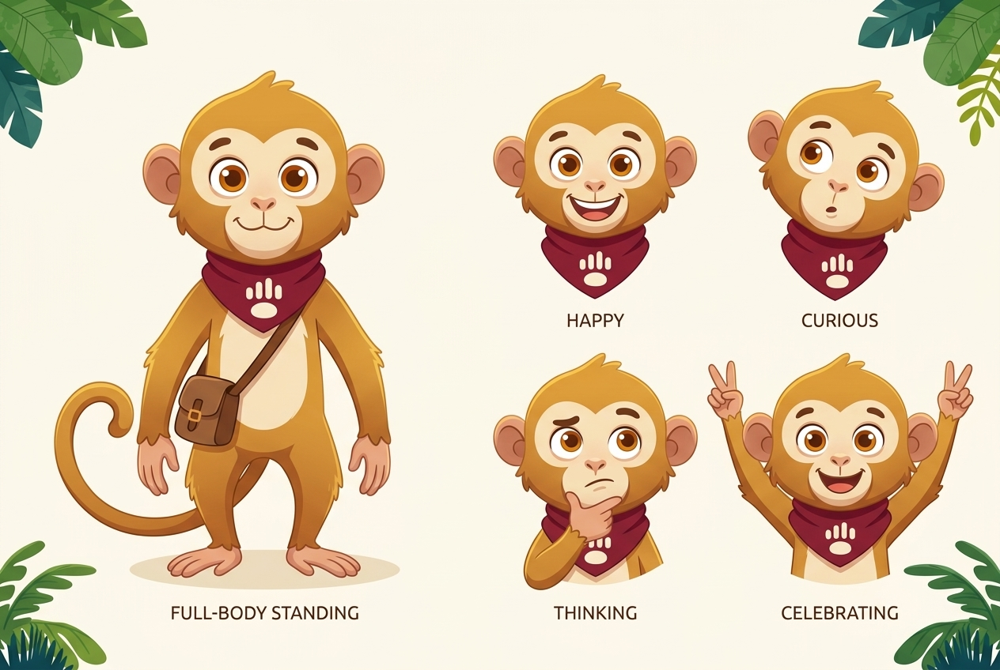
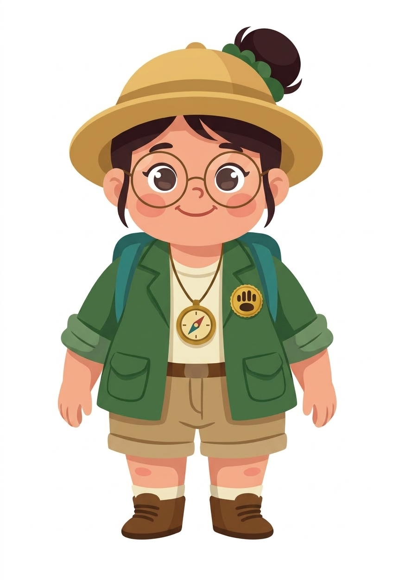

Character Bible → Master Character → Construction System → Pose/Expression Library → Asset Library. Dokumen lengkap (ID + TH): docs/FIEZEL-CHARACTER-UNIVERSE.md dan docs/FIEZEL-CHARACTER-CONTEXT-MAP.md.
Sumber render ulang. Setiap aset baru wajib dirender dari acuan ini dengan instruksi "ubah hanya pose".


Monyet ekor panjang · syal marun ber-emblem PAW · tas selempang. 6 pose badan + 4 bust.
Guru petualang · kacamata bulat · pin PAW emas · kompas. 5 pose badan + 4 bust (tanpa topi).
Nusa di pundak, tos, belajar bersama, mengintip dari topi, berjalan beriringan.
Hero landing · Onboarding · Celebration · Empty / Offline.
assets/brand/fiezel-paw.svg).